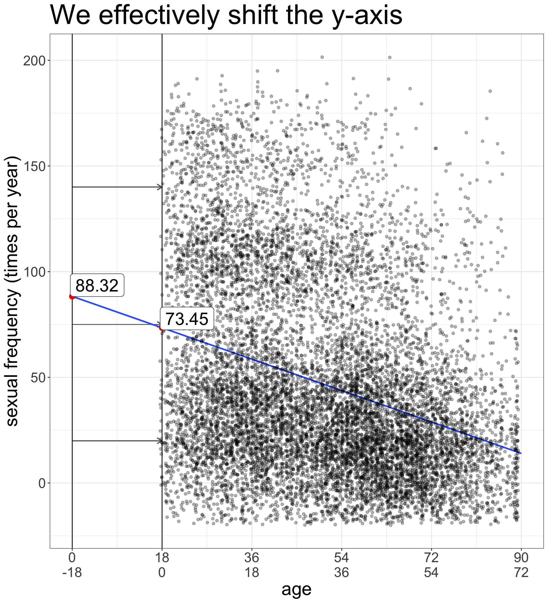
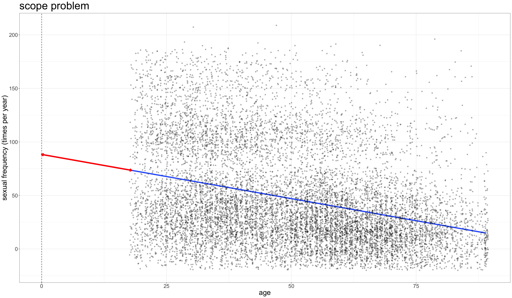

Building Models
Sociology 312/412/512, University of Oregon
Aaron Gullickson
The OLS Regression Line
Drawing straight lines

Drawing straight lines
Elements of a straight line

The formula for a straight line
in high school
\[y=a+bx\]
- \(a\) is the y-intercept: the value of \(y\) when \(x\) is zero.
- \(b\) is the slope: the change in \(y\) for a one-unit increase in \(x\) (the rise over the run).
- The values of \(a\) and \(b\) are called coefficients - a constant value that is multiplied by a variable.
How we do it in statistics
\[\hat{y}_i=b_0+b_1x_i\]
- \(\hat{y}_i\): The predicted value of \(y\) for \(i\)th observation from the linear formula.
- \(b_0\): The predicted value of \(y\) when \(x\) is zero.
- \(b_1\): The predicted change in \(y\) for a one-unit increase in \(x\).
How do we know which line is best?
We choose the line that minimizes the error in our prediction
For a given observation \(i\), the value \(y_i-\hat{y}_i\) gives the residual or error in the prediction.
To get the total error in prediction, we can calculate the sum of squared residuals:
\[SSR=\sum_{i=1}^n (y_i-\hat{y}_i)^2=\sum_{i=1}^n (y_i-b_0-b_1x_i)^2\]
The best-fitting line is the one with the smallest possible sum of squared residuals. This is called the Ordinary Least Squares (OLS) regression line.
Formulas for the best-fitting line
\[b_1=r * \frac{s_y}{s_x}\] \[b_0=\bar{y}-b_1*\bar{x}\]
We can calculate by hand in R, although we will learn an easier way later:
\[\hat{\texttt{property_crimes}}_i=1238.1+220.8(\texttt{unemployment_rate}_i)\]
The OLS regression line as a model

The OLS regression line is often called a linear model because we are measuring the relationship between two variables by applying a linear function to characterize the relationship.
the lm command can be used to create a model object in R:
The tilde (~) is used to indicate the relationship between the two variables with the dependent variable on the left hand side.
Use summary for model TMI
Call:
lm(formula = property_rate ~ unemploy_rate, data = crimes)
Residuals:
Min 1Q Median 3Q Max
-1007.08 -529.05 32.59 409.89 1785.02
Coefficients:
Estimate Std. Error t value Pr(>|t|)
(Intercept) 1238.07 408.59 3.030 0.00390 **
unemploy_rate 220.78 72.04 3.065 0.00354 **
---
Signif. codes: 0 '***' 0.001 '**' 0.01 '*' 0.05 '.' 0.1 ' ' 1
Residual standard error: 607.6 on 49 degrees of freedom
Multiple R-squared: 0.1608, Adjusted R-squared: 0.1437
F-statistic: 9.392 on 1 and 49 DF, p-value: 0.003539Add the best-fitting line to your scatterplot
geom_smooth with the argument method="lm" will add the OLS regression line to your scatterplot.
se=FALSE will suppress a confidence band which I will show later.

Interpreting the results
\[\hat{\texttt{property_crimes}}_i=1238.1+220.8(\texttt{unemploy_rate}_i)\]
Intercept
The model predicts that states with no unemployment will have a property crime rate of 1238.1 crimes per 100,000, on average.
Slope
The model predicts that a one percent increase in the unemployment rate is associated with an increase of 220.8 property crimes per 100,000, on average.
Language Matters!
- The model predicts
- We always preface results with this phrase, because we want to be clear that the results are driven by a model, which could also be a bad model.
- is associated with
- We use this to describe the association between variables while avoiding causal language.
- on average
- We don’t expect to see the exact same value for all cases with \(x=0\) or the same change in \(y\) for all one-unit increases in \(x\). Rather we expect to see those values on average. If we don’t include this qualifier, our results seem to deterministic.
Try interpreting these numbers
Try interpreting these numbers from a regression model where the dependent variable is box office returns (in millions of dollars) and the independent variable is the metascore (from 0 to 100 in “points”).
\[\hat{\texttt{box_office}}_i=4.98+0.77(\texttt{metascore}_i)\]
Intercept
The model predicts that movies that receive a zero metascore rating will make $4.98 million, on average.
Slope
The model predicts that a one point increase in the metascore rating is associated with a $770,000 increase in box office returns, on average.
Nonsensical Intercepts
Try interpreting these numbers from a regression model where the dependent variable is sexual frequency (sexual encounters per year) and the independent variable is age in years.
\[\hat{\texttt{sex}}_i=88.32-0.83(\texttt{age}_i)\]
Intercept
The model predicts that newborns will have sex 88.32 times per year, on average.
üòÆ Say what??!!

Getting meaningful intercepts
Lets subtract some constant \(a\) from the variable \(x\):
\[x^*=x-a\]
The value for zero on our new re-centered \(x^*\) will be \(a\) on the original scale.

Now interpret these numbers
\[\hat{\texttt{sex}}_i=73.45-0.83(\texttt{age}_i-18)\]
Intercept
The model predicts that 18 year old individuals have sex 73.45 times per year, on average.
Slope
The model predicts that a one year increase in age is associated with 0.83 fewer sexual encounters per year, on average.
How good is \(x\) as a predictor of \(y\)?
I pick a random observation from the dataset and ask you to guess the value of \(y\). What is your best guess?
Choose \(\bar{y}\)
- Because it is the balancing point, the mean will give you the smallest error, on average.
- If you repeat this procedure, your average error in prediction will be equal to \(s_y\).

How good is \(x\) as a predictor of \(y\)?
I pick a random observation from the dataset and tell you its value of \(x\), and then ask you to guess the value of \(y\). What is your best guess?
Choose \(\hat{y}_i\) from the linear model
- Assuming that a linear model is reasonable, the predicted value from this model will be your best guess.
- The average error in your prediction will be equal to the average residual from the model, \(|\hat{y}_i-y_i|\).

How much did we reduce the error?

On average, what proportion of the red line is the green line across all observations?
Red: \(\sum_{i=1}^n (y_i-\bar{y})^2\)
Green: \(\sum_{i=1}^n (y_i-\hat{y}_i)^2\)
Proportion: \(1-\frac{\sum_{i=1}^n (y_i-\hat{y}_i)^2}{\sum_{i=1}^n (y_i-\bar{y})^2}\)
R-squared is a measure of goodness of fit
About 19.7% of the variation in property crime rates across states can be accounted for by variation in unemployment rates across states.
Call:
lm(formula = property_rate ~ unemploy_rate, data = crimes)
Residuals:
Min 1Q Median 3Q Max
-1007.08 -529.05 32.59 409.89 1785.02
Coefficients:
Estimate Std. Error t value Pr(>|t|)
(Intercept) 1238.07 408.59 3.030 0.00390 **
unemploy_rate 220.78 72.04 3.065 0.00354 **
---
Signif. codes: 0 '***' 0.001 '**' 0.01 '*' 0.05 '.' 0.1 ' ' 1
Residual standard error: 607.6 on 49 degrees of freedom
Multiple R-squared: 0.1608, Adjusted R-squared: 0.1437
F-statistic: 9.392 on 1 and 49 DF, p-value: 0.003539Statistical inference for linear models
The population model is: \[\hat{y}_i=\beta_0+\beta_1(x_i)\]
The null hypothesis of no relationship is given by: \[H_0: \beta_1=0\]
How do we test?
Call:
lm(formula = property_rate ~ unemploy_rate, data = crimes)
Residuals:
Min 1Q Median 3Q Max
-1007.08 -529.05 32.59 409.89 1785.02
Coefficients:
Estimate Std. Error t value Pr(>|t|)
(Intercept) 1238.07 408.59 3.030 0.00390 **
unemploy_rate 220.78 72.04 3.065 0.00354 **
---
Signif. codes: 0 '***' 0.001 '**' 0.01 '*' 0.05 '.' 0.1 ' ' 1
Residual standard error: 607.6 on 49 degrees of freedom
Multiple R-squared: 0.1608, Adjusted R-squared: 0.1437
F-statistic: 9.392 on 1 and 49 DF, p-value: 0.003539Just look at a summary of the model! üòé
⚠️ Linear models only fit straight lines
⚠️ Outliers can be influential

⚠️ Don’t extrapolate beyond range of data
The Power of Controlling for Other Variables
Does lack of education lead to crime?
(Intercept) percent_lhs
1693.3291 71.4142 The model predicts that a one percent increase in the percent of a state’s population without a high school diploma is associated with 71.4 more property crimes per 100,000.
Why might this be the case?
⚠️ Potential spuriousness!
[1] 0.5000783[1] 0.8241208- States with a higher poverty rate have higher rates of property crime, on average.
- States with a higher percent of the population without a high school diploma have a higher poverty rate, on average.
- What if the positive relationship between percent of the population with no high school diploma and property crime is really operating through this effect on poverty rates?
Poverty might be a confounding variable
Causal

Spurious

Account for a confounding variable
Just add the potential confounder to the model:
\[\hat{\texttt{crime_rate}}_i=b_0+b_1(\texttt{percent lhs}_i)+b_2(\texttt{poverty rate}_i)\]
üòÆ Thats right, you can have more than one independent variable in a linear model. But what does it mean?
Plot in three dimensions
Calculating the model
(Intercept) percent_lhs poverty_rate
1418.48554 -79.44948 198.28423 Why these numbers?
Slopes and intercepts are chosen that minimize the sum of the squared residuals, just as for a bivariate OLS regression model.
Interpretation
- The model predicts that, holding constant the poverty rate, a one percentage point increase in the percent of the population with no high school diploma is associated with 79.4 fewer property crimes per 100,000, on average.
- The model predicts that, holding constant the percent of the population with no high school diploma, a one percentage point increase in the poverty rate is associated is associated with 198.3 more crimes per 100,000, on average.
ü§î Holding Constant?
Because both independent variables are in the model at the same time, the effect of each variable is net of the indirect effect of the other variable.
We can say this in different ways:
- The model predicts that, holding constant the poverty rate, a one percentage point increase in the percent of the population with no high school diploma is associated with 79.4 fewer property crimes per 100,000, on average.
- The model predicts that, among states with the same poverty rate, a one percentage point increase in the percent of the population with no high school diploma is associated with 79.4 fewer property crimes per 100,000, on average.
- The model predicts that, controlling for the poverty rate, a one percentage point increase in the percent of the population with no high school diploma is associated with 79.4 fewer property crimes per 100,000, on average.
What is the effect of education on crime?
The relationship seemed positive…
but is was negative once we controlled for the poverty rate!
How to present multiple linear models
| Model 1 | Model 2 | Model 3 | |
|---|---|---|---|
| Intercept | 1693.3*** | 1418.5*** | 6010.5*** |
| (356.0) | (327.8) | (1137.9) | |
| Percent less than HS | 71.4* | -79.4 | -101.7* |
| (32.0) | (50.6) | (44.3) | |
| Poverty rate | 198.3*** | 150.8** | |
| (54.8) | (49.3) | ||
| Unemployment rate | 161.1 | ||
| (82.1) | |||
| Median age | -125.3*** | ||
| (28.3) | |||
| N | 51 | 51 | 51 |
| R-squared | 0.092 | 0.287 | 0.512 |
| * p < 0.05, ** p < 0.01, *** p < 0.001 | |||
| Standard errors in parenthesis. | |||
- The dependent variable is identified in the caption.
- Each model is shown in a column.
- Independent variables are on the rows. If a cell is blank, then the given variable is not in the model.
- Within each cell:
- The top number is the slope.
- The bottom number in parenthesis is the standard error for the slope.
- The asterisks give benchmarks of the p-value for rejecting the null hypothesis that a slope is zero.
- Summary statistics are shown at the bottom.
Including Categorical Variables as Predictors
Gender and sexual frequency
Women report 2.17 fewer sexual encounters per year than men.
Warning
Note that I use the term report here because its not exactly clear why these numbers would be different. The difference could reflect differences by sexual orientation, or it could just be that either men over-report or women under-report sexual frequency. It could also be sampling error.
Make an indicator variable
\[\texttt{female}_i=\begin{cases} 1 & \text{if female}\\ 0 & \text{otherwise} \end{cases}\]
- male is the reference category.
- female is the indicated category.
- It operates like an on/off switch.
Make a scatterplot with indicator

Make a scatterplot with indicator

Make a scatterplot with indicator
tapply vs. lm
Mean and mean difference
- Intercept is the mean for the reference (men)
- Slope is the mean difference which in this case tells us that women report 2.17 fewer instances of sex per year than men.
Categorical variables in lm
There is no need to create indicator variables. Just feed in categorical variables directly:
- R knows what to do with the variable. It creates its own indicator variable.
- The reference for the categorical variable is already set as the first category, which in this case is male. You can use the
relevelcommand to change the reference:
More than two categories
(Intercept) maritalMarried maritalDivorced maritalWidowed
53.455737 -7.010258 -5.576478 -27.573078 - Each category gets an indicator variable, except for one. Which one is missing here?
- Never-married is the reference category. The category not included is always the reference category.
- Each coefficient gives the mean difference between the indicated category and the reference category.
Interpretations
(Intercept) maritalMarried maritalDivorced maritalWidowed
53.455737 -7.010258 -5.576478 -27.573078 - Never-married individuals have sex 53.5 times per year, on average.
- Widowed individuals have sex 27.6 fewer times per year than never-married individuals, on average.
- Divorced individuals have sex 5.6 fewer times per year than never-married individuals, on average.
- Married individuals have sex 7.0 fewer times per year than never-married individuals, on average.
Why use a model?
In a model, we can calculate mean differences while holding constant other variables.
For example, how much of the differences in sexual frequency by marital status result from differences in age?
These results are very different!
Compare the models
| Model 1 | Model 2 | |
|---|---|---|
| Intercept | 53.46*** | 70.21*** |
| (0.79) | (0.90) | |
| Married | -7.01*** | 7.33*** |
| (0.99) | (1.03) | |
| Divorced | -5.58*** | 10.90*** |
| (1.21) | (1.25) | |
| Widowed | -27.57*** | 4.99** |
| (1.62) | (1.81) | |
| age | -0.91*** | |
| (0.03) | ||
| N | 11785 | 11785 |
| R-squared | 0.024 | 0.113 |
| * p < 0.05, ** p < 0.01, *** p < 0.001 | ||
| Standard errors in parenthesis. Age centered on 18 years. Married is reference category for marital status. | ||
Controlling for age gets rid of the bias between marital groups due to age differences.
- In Model 1, all of the differences are negative, indicating that never-married individuals, on average, have sex more than the other marital categories.
- In Model 2, all of the differences are positive, indicating that never-married individuals, on average, have sex less than the other marital categories when comparing individuals of the same age.
- The substantially higher sexual frequency of never-married individuals is entirely a function of age.
Interaction Terms
Adding context to a relationship
Additive models will miss context
(Intercept) nchild genderFemale
25.239547 1.155477 -3.974105 \[\hat{\texttt{wages}}_i=25.24+1.55(\texttt{nchild}_i)-3.97(\texttt{female}_i)\]
What is the relationship between wages and number of children for men and women?
Men
The \(\texttt{female}_i\) variable is an indicator variable that is zero for men, so:
\[\begin{eqnarray*} \hat{\texttt{wages}}_i & = & 25.24+1.55(\texttt{nchild}_i)-3.97(0)\\ \hat{\texttt{wages}}_i & = & 25.24+1.55(\texttt{nchild}_i) \end{eqnarray*}\]
Women
The \(\texttt{female}_i\) variable is an indicator variable that is one for women, so:
\[\begin{eqnarray*} \hat{\texttt{wages}}_i & = & 25.24+1.55(\texttt{nchild}_i)-3.97(1)\\ \hat{\texttt{wages}}_i & = & (25.24-3.97)+1.55(\texttt{nchild}_i)\\ \hat{\texttt{wages}}_i & = & 21.27+1.55(\texttt{nchild}_i)\\ \end{eqnarray*}\]
Additive models make parallel lines
\[\begin{eqnarray*} \hat{\texttt{wages}}_i&=&25.24+1.55(\texttt{nchild}_i)\\ & & -3.97(\texttt{female}_i) \end{eqnarray*}\]
- The effect of number of children on wages ($1.55) is forced to be the same for men and women.
- The wage difference between men and women ($3.97) is forced to be the same at all values of number of children.
We need a multiplicative model
(Intercept) nchild genderFemale nchild:genderFemale
24.719748 1.778860 -2.839198 -1.334728 \[\hat{\texttt{wages}}_i=24.72+1.78(\texttt{nchild}_i)-2.84(\texttt{female}_i)-1.33(\texttt{nchild}_i)(\texttt{female}_i)\]
What is the relationship between wages and number of children for men and women?
Men
The \(\texttt{female}_i\) variable is an indicator variable that is zero for men, so:
\[\begin{eqnarray*} \hat{\texttt{wages}}_i & = & 24.72+1.78(\texttt{nchild}_i)-2.84(0)\\ & & -1.33(\texttt{nchild}_i)(0)\\ \hat{\texttt{wages}}_i & = & 24.72+1.78(\texttt{nchild}_i) \end{eqnarray*}\]
Women
The \(\texttt{female}_i\) variable is an indicator variable that is one for women, so:
\[\begin{eqnarray*} \hat{\texttt{wages}}_i & = & 24.72+1.78(\texttt{nchild}_i)-2.84(1)\\ & & -1.33(\texttt{nchild}_i)(1)\\ \hat{\texttt{wages}}_i & = & (24.72-2.84)+(1.78-1.33)(\texttt{nchild}_i)\\ \hat{\texttt{wages}}_i & = & 21.82+0.45(\texttt{nchild}_i)\\ \end{eqnarray*}\]
Multiplicative models give non-parallel lines

\[\begin{eqnarray*}\hat{\texttt{wages}}_i & = & 24.72+1.78(\texttt{nchild}_i)-2.84(\texttt{female}_i)\\ & & -1.33(\texttt{nchild}_i)(\texttt{female}_i)\\\end{eqnarray*}\]
- This model shows that men and women get different returns to wages for the number of children with men getting a much greater return ($1.78 to $0.45).
- This models shows that the wage gap starts at $2.84 when men and women have no children and grows by $1.33 for every child.
Two approaches
Separate models
(Intercept) nchild
21.8805499 0.4441326 - Two intercepts (women and men)
- Two slopes (women and men)
Interaction terms give difference in slopes
| Value | Separate models | Interaction terms |
|---|---|---|
| Intercept | ||
| Men’s wages with no children | $24.72 | $24.72 |
| Women’s wages with no children | $21.88 | |
| Difference in men’s and women’s wages with no children | -$2.84 | |
| Slope | ||
| Men’s return for an additional child | $1.78 | $1.78 |
| Women’s return for an additional child | $0.45 | |
| Difference in men’s and women’s return for an additional child | -$1.33 |
Interpretation
(Intercept) nchild genderFemale nchild:genderFemale
24.719748 1.778860 -2.839198 -1.334728 \[\hat{\texttt{wages}}_i = 24.72+1.78(\texttt{nchild}_i)-2.84(\texttt{female}_i)-1.33(\texttt{nchild}_i)(\texttt{female}_i)\]
- The model predicts that men with no children make $24.72/hour, on average.
- The model predicts that among workers with no children, women make $2.84 less than men, on average.
- The model predicts that among men, having an additional child at home is associated with at a $1.78 increase in hourly wages.
- The model predicts that the gain in hourly wages from having an additional child at home is $1.33 smaller for women than it is for men.
- The main effect of each variable in the interaction term is only the effect when the other variable in the interaction term is zero/the reference category.
Why not always separate models?
| Model 1 | Model 2 | |
|---|---|---|
| Intercept | 24.720*** | 24.786*** |
| (0.072) | (0.071) | |
| Number of children | 1.779*** | 1.471*** |
| (0.050) | (0.049) | |
| Female | -2.839*** | -3.134*** |
| (0.105) | (0.103) | |
| Number of children x Female | -1.335*** | -1.075*** |
| (0.074) | (0.072) | |
| Age | 0.273*** | |
| (0.003) | ||
| N | 145647 | 145647 |
| R-squared | 0.024 | 0.069 |
| * p < 0.05, ** p < 0.01, *** p < 0.001 | ||
| Standard errors in parenthesis. Age centered on 40 years. | ||
- We can add in additional control variables without forcing everything to vary by context.
- We can do a hypothesis test directly on whether the slopes really are different by looking at the p-value on the interaction term.
Interacting two categorical variables
An additive model:
(Intercept) genderFemale educationHS Diploma
16.27 -5.06 4.71
educationAA Degree educationBachelors Degree educationGraduate Degree
8.40 17.13 24.63 | LHS | HS | AA | BA | Grad | |
|---|---|---|---|---|---|
| Man | |||||
| Woman | |||||
| Gender difference |
Interacting two categorical variables
An additive model:
(Intercept) genderFemale educationHS Diploma
16.27 -5.06 4.71
educationAA Degree educationBachelors Degree educationGraduate Degree
8.40 17.13 24.63 | LHS | HS | AA | BA | Grad | |
|---|---|---|---|---|---|
| Man | 16.27 | ||||
| Woman | |||||
| Gender difference |
Interacting two categorical variables
An additive model:
(Intercept) genderFemale educationHS Diploma
16.27 -5.06 4.71
educationAA Degree educationBachelors Degree educationGraduate Degree
8.40 17.13 24.63 | LHS | HS | AA | BA | Grad | |
|---|---|---|---|---|---|
| Man | 16.27 | ||||
| Woman | 16.27-5.06 | ||||
| Gender difference | -5.06 |
Interacting two categorical variables
An additive model:
(Intercept) genderFemale educationHS Diploma
16.27 -5.06 4.71
educationAA Degree educationBachelors Degree educationGraduate Degree
8.40 17.13 24.63 | LHS | HS | AA | BA | Grad | |
|---|---|---|---|---|---|
| Man | 16.27 | 16.27+4.71 | |||
| Woman | 16.27-5.06 | ||||
| Gender difference | -5.06 |
Interacting two categorical variables
An additive model:
(Intercept) genderFemale educationHS Diploma
16.27 -5.06 4.71
educationAA Degree educationBachelors Degree educationGraduate Degree
8.40 17.13 24.63 | LHS | HS | AA | BA | Grad | |
|---|---|---|---|---|---|
| Man | 16.27 | 16.27+4.71 | |||
| Woman | 16.27-5.06 | 16.27+4.71-5.06 | |||
| Gender difference | -5.06 | -5.06 |
Interacting two categorical variables
An additive model:
(Intercept) genderFemale educationHS Diploma
16.27 -5.06 4.71
educationAA Degree educationBachelors Degree educationGraduate Degree
8.40 17.13 24.63 | LHS | HS | AA | BA | Grad | |
|---|---|---|---|---|---|
| Man | 16.27 | 16.27+4.71 | 16.27+8.40 | 16.27+17.13 | 16.27+24.63 |
| Woman | 16.27-5.06 | 16.27+4.71-5.06 | 16.27+8.40-5.06 | 16.27+17.13-5.06 | 16.27+24.63-5.06 |
| Gender difference | -5.06 | -5.06 | -5.06 | -5.06 | -5.06 |
- Gender differences are forced to be the same at every education level
- Returns to degree are forced to be the same for men and women
Interacting two categorical variables
A multiplicative model:
(Intercept) genderFemale
15.79 -3.84
educationHS Diploma educationAA Degree
4.82 8.58
educationBachelors Degree educationGraduate Degree
18.30 25.82
genderFemale:educationHS Diploma genderFemale:educationAA Degree
-0.41 -0.67
genderFemale:educationBachelors Degree genderFemale:educationGraduate Degree
-2.54 -2.52 | LHS | HS | AA | BA | Grad | |
|---|---|---|---|---|---|
| Man | |||||
| Woman | |||||
| Gender difference |
Interacting two categorical variables
A multiplicative model:
(Intercept) genderFemale
15.79 -3.84
educationHS Diploma educationAA Degree
4.82 8.58
educationBachelors Degree educationGraduate Degree
18.30 25.82
genderFemale:educationHS Diploma genderFemale:educationAA Degree
-0.41 -0.67
genderFemale:educationBachelors Degree genderFemale:educationGraduate Degree
-2.54 -2.52 | LHS | HS | AA | BA | Grad | |
|---|---|---|---|---|---|
| Man | 15.79 | ||||
| Woman | |||||
| Gender difference |
Interacting two categorical variables
A multiplicative model:
(Intercept) genderFemale
15.79 -3.84
educationHS Diploma educationAA Degree
4.82 8.58
educationBachelors Degree educationGraduate Degree
18.30 25.82
genderFemale:educationHS Diploma genderFemale:educationAA Degree
-0.41 -0.67
genderFemale:educationBachelors Degree genderFemale:educationGraduate Degree
-2.54 -2.52 | LHS | HS | AA | BA | Grad | |
|---|---|---|---|---|---|
| Man | 15.79 | ||||
| Woman | 15.79-3.84 | ||||
| Gender difference | -3.84 |
Interacting two categorical variables
A multiplicative model:
(Intercept) genderFemale
15.79 -3.84
educationHS Diploma educationAA Degree
4.82 8.58
educationBachelors Degree educationGraduate Degree
18.30 25.82
genderFemale:educationHS Diploma genderFemale:educationAA Degree
-0.41 -0.67
genderFemale:educationBachelors Degree genderFemale:educationGraduate Degree
-2.54 -2.52 | LHS | HS | AA | BA | Grad | |
|---|---|---|---|---|---|
| Man | 15.79 | 15.79+4.82 | |||
| Woman | 15.79-3.84 | ||||
| Gender difference | -3.84 |
Interacting two categorical variables
A multiplicative model:
(Intercept) genderFemale
15.79 -3.84
educationHS Diploma educationAA Degree
4.82 8.58
educationBachelors Degree educationGraduate Degree
18.30 25.82
genderFemale:educationHS Diploma genderFemale:educationAA Degree
-0.41 -0.67
genderFemale:educationBachelors Degree genderFemale:educationGraduate Degree
-2.54 -2.52 | LHS | HS | AA | BA | Grad | |
|---|---|---|---|---|---|
| Man | 15.79 | 15.79+4.82 | |||
| Woman | 15.79-3.84 | 15.79+4.82-3.84-0.41 | |||
| Gender difference | -3.84 | -4.25 |
Interacting two categorical variables
A multiplicative model:
(Intercept) genderFemale
15.79 -3.84
educationHS Diploma educationAA Degree
4.82 8.58
educationBachelors Degree educationGraduate Degree
18.30 25.82
genderFemale:educationHS Diploma genderFemale:educationAA Degree
-0.41 -0.67
genderFemale:educationBachelors Degree genderFemale:educationGraduate Degree
-2.54 -2.52 | LHS | HS | AA | BA | Grad | |
|---|---|---|---|---|---|
| Man | 15.79 | 15.79+4.82 | 15.79+8.58 | 15.79+18.30 | 15.79+25.82 |
| Woman | 15.79-3.84 | 15.79+4.82-3.84-0.41 | 15.79+8.58-3.84-0.67 | 15.79+18.30-3.84-2.54 | 15.79+25.82-3.84-2.52 |
| Gender difference | -3.84 | -4.25 | -4.51 | -6.38 | -6.36 |
Two ways to view it
Differences in gender gap by degree
| Degree | Gender gap |
|---|---|
| None | -3.84 |
| HS | -3.84-0.41 |
| AA | -3.84-0.67 |
| BA | -3.84-2.54 |
| Grad | -3.84-2.52 |
Differences in returns for men and women
| Degree | Men’s return | Women’s return |
|---|---|---|
| HS | 4.82 | 4.82-0.41 |
| AA | 8.58 | 8.58-0.67 |
| BA | 18.3 | 18.3-2.54 |
| Grad | 25.82 | 25.82-2.52 |
Same underlying reality

Sociology 312/412/512, University of Oregon